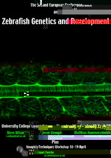

EB 2001 & AAA Annual Meeting . March 31-April 4, 2001, Orlando, Florida USA
Second European Conference on Zebrafish Genetics and Development . April 19-22, 2001, London, England
Jacques Monod Conference (C.N.R.S) . April 26-30, 2001 Aussois, France

Experimental
Biology (EB 2001) &
|
AAA's membership dues will increase for 2001 to $120, but between now and the EB 2001 abstract deadline (November 6, 2000), zebrafish folks can join AAA for the current price of $95 (a $25 savings), then register for EB at the member rate (a $60 savings).
AAA membership includes a free print and on-line subscription to either The Anatomical Record or Developmental Dynamics. Be sure to indicate your choice on the form. Apart from submitted zebrafish manuscripts, Developmental Dynamics plans at least one cluster of REVIEWS articles for 2001. John Fallon and Hazel Sive will put this first cluster together in the coming weeks. John Fallon would appreciate author-initiated REVIEWS article proposals. You can contact him with a brief outline of your proposed article at jffallon@facstaff.wisc.edu
Under "Topical Interests & Research Areas," insert "Zebrafish" at the end of the list under "Other". Submit by November 6, 2000 and you'll be charged just $95 for your 2001 membership, including the journal of your choice.
Includes information on abstract submission, meeting registration form, housing reservations, and complete details on all scientific sessions.

Second European Conference on Zebrafish
Genetics
|

"Click" on this to get a printable version of the poster
Schedule: The meeting will open at 4.00 on the 19th April 2001 in the main building at University College London. During the afternoon, people can put up their posters, load their PowerPoint talks, drink coffee and enjoy the unseasonably warm and sunny weather. From 6.00, we will have a welcome buffet plus drinks and an open bar.
All day Friday and Saturday and Sunday morning will be a mixture of poster sessions and short talks (15 minutes including discussion). Talks will be selected from amongst the submitted abstracts. Saturday night’s entertainment will start with a tour of the London Aquarium and will finish on the streets of Soho. The meeting will conclude with a buffet lunch on Sunday.
Registration costs: Meeting registration is £200 including food and entertainment. You should pay this amount in sterling when you register (please add the equivalent of £8 if paying in a different currency to cover exchange charges). You will be billed individually for housing at a later date. We may receive additional funding for the meeting; if so, this will be used to provide financial assistance for those in need or to lower accommodation costs.
Housing costs: We will book rooms for you from Thursday night through Saturday night. Single rooms are limited in number and so in general, we will assign people to twins or triples (respecting gender of course) unless otherwise specifically requested. Individual rooms with en-suite facilities in local hotels cost about £70-80 per night. Shared rooms in local hotels or bed and breakfast hotels, some with en suite facilities, some with shared facilities cost between about £25 and £40 per person and will make up the bulk of the accommodation reserved.
Abstracts: Abstracts should be submitted together with registration details. You should indicate whether you wish to present a poster or would like to be considered for giving a talk. Printed abstract size will be about 11cm by 15cm. Poster size can be up to 1 metre by 1 metre. Talks can be in all formats though please bear in mind the potential chaos if we have to change between computers every 15 minutes. For this reason, we would ideally like Powerpoint talks to be submitted on CD shortly in advance of the meeting.
Registration details: Registration will take place in January via an online registration form. Details will again be distributed via ZFIN. We have capacity for 270 attendees. If more people wish to attend, we will have to turn down some applications and return your registration costs.
Food: All meals include a vegetarian option. If you have dietary requirements beyond this, please let us know.
Commercial exhibitors: We have some space for companies that will be of specific interest to the zebrafish community. Interested companies should contact one of the organisers.
Imaging workshop (18th and 19th April): A small number of conference attendees will be able to take part in a two day workshop preceding the meeting. The workshop will consist of short lectures and practical sessions covering cell labelling and transplantations, GFP-transgenic techniques and applications, one- and two-photon confocal microscopy, time-lapse imaging and image analysis. Applications will be online in January and will require a brief CV and a short statement of research interests indicating why the applicant would benefit from the imaging course. A registration fee of £120 should be paid when the application has been accepted, and will cover the costs of the workshop, meals and the workshop dinner to take place on the evening of the 18th of April. You will be billed individually for housing at a later date. Full details of the workshop will be distributed via ZFIN. We may receive additional funding for the workshop; if so this will be used to lower costs and provide financial assistance for those in need.
Contact Information:
Steve Wilson s.wilson@ucl.ac.uk
Derek Stemple dstempl@nimr.mrc.ac.uk
Matthias Hammerschmidt hammerschmid@immunbio.mpg.de
Hitoshi Okamoto hitoshi@brain.riken.go.jp
Miguel Concha m.concha@ucl.ac.uk

Jacques Monod Conference (C.N.R.S)April 26-30, 2001 Aussois, France |
April 26-30, 2001 Aussois, France (a beautiful location in the
French Alps near Lyon and Grenoble)
Organized by: Prof Axel Meyer (Chairman, Department of Biology, University of Konstanz,
78457 Konstanz, Germany) and
Dr. Herve Philippe (Vice-Chairman, Université Paris-Sud, C.N.R.S. UPRESA 8080, Equipe
Phylogénie et Evolution Moléculaires, Bätiment 444, F - 91405 Orsay Cedex, France)
Duplications of genes and entire genomes are one of the major mechanisms that facilitated
the increasing complexity of organisms in the evolution of life. Gene duplications have
permitted the functional diversification of genes, created gene families and generally
increased genomic and possibly also phenotypic complexity. However, there is still great
uncertainty about the role of gene and/or genome-wide duplications and the evolution of
regulatory changes in producing the architectures of genomes and their relative influence
on the evolution of novel body plans during major transitions in the eukaryotic phyla and
kingdoms.
Topics that will be covered during the conference include:
- Evidence for genome duplications during eukaryote evolution with emphasis on vertebrates and plants
- Gene loss or gain of function after gene duplication?
- Evolution of novel gene functions
- The evolution of gene families, phylogenetic inferences, and chromosomal evolution - Homology, paralogy and analogy: terminological muddle and consequences of gene duplications
- Genomic evolution: lessons from the current genome projects
- Comparative genomics in the age of genome projects
- Concerted vs. birth-and-death evolution in multigene families
Invited speakers include:
Andre Adoutte (Centre de Genetique Moleculaire, France)
Giorgio Bernardi (Stazione Zoologica "A. Dohrn", Italy)
MarioCappeci (University of Utah, Salt Lake City, USA)
Eric Davidson (California Institute of Technology, USA)
Bernard Dujon (Institut Pasteur, Paris, France)
Allan Force (University of Oregon, USA)
Christian Gautier (Universite Claude Bernard-Lyon, Villeurbanne, France)
Manolo Gouy (Université Claude Bernard, France)
Steven Henikoff (Fred Hutchinson Cancer Research Center, Seattle, USA)
Peter Holland (University of Reading, UK)
Austin Hughes (University of South Carolina, USA)
Wen-Hsiung Li (The University of Chicago, USA)
Bernard Jacq (Génétique et Physiologie du Développement, Marseille, France)
Lars-Gustaf Lundin, (University of Uppsala, Sweden)
Michael Lynch (Indiana University, USA)
Masatoshi Nei, (The Pennsylvania State University, USA)
John Postlethwait, (University of Oregon, USA)
Frank Ruddle (Yale University , USA)
David Sankoff (Université de Montréal, Canada)
Manfred Schartl (University of Wurzburg, Germany)
Arend Sidow (School of Medicine, Stanford University, USA)
Jörg Spring (Zoologisches Institut Base, Switzerland)
Jean Thierry-Mieg (Biochimie Macromoléculaire, Monpellier, France)
Dr. Vernier, Philippe (Institut Alfred Fessard, Gif-sur-Yvestte, France)
Bruce Walsh (University of Arizona, USA)
Kenneth Wolfe (University of Dublin, Ireland)
Applications for registration:
A limited number of slots for 15 minute contributed talks are available, but submission of
abstracts for poster presentations are
encouraged.
Applications to participate in the conference- in the form of a title and an abstract of
up to 250 words - should be send to Yves Van de Peer (yvesvandepeer@uni-konstanz.de) or Axel
Meyer (axel.meyer@uni-konstanz.de) before
October 31st.
Costs of registration which includes housing, food and reception are:
- PhD. Students: 450 USD
- Non-students: 600 USD
Further information can be found at http://monod.univ-tours.fr/etmeyer.htm
For questions or comments, contact:
Pat Edwards
Institute of Neuroscience
University of Oregon
Eugene, OR 97403 USA
fax:541-346-4548
edwards@uoneuro.uoregon.edu
ZFIN t
{kind=link}